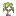

aruori6
图鉴
首页
标签目录
GitHub
简单
精确
首页
›
Atmospheric
›
月桂树苗

月桂树苗
Laurel Sapling
英文名: Laurel Sapling
命名空间 ID:
atmospheric:laurel_sapling
类型:
方块
所属模组:
Atmospheric
资料检索:
MC百科检索「月桂树苗」
所属标签
#another_furniture:flower_box_placeables
#caupona:fuel/woods
#environmental:muddy_pig_decorations
#minecraft:saplings
#oritech:biomatter
#supplementaries:flower_box_plantable
获取方式
方块掉落
(2)
月桂树叶
月桂树苗盆栽